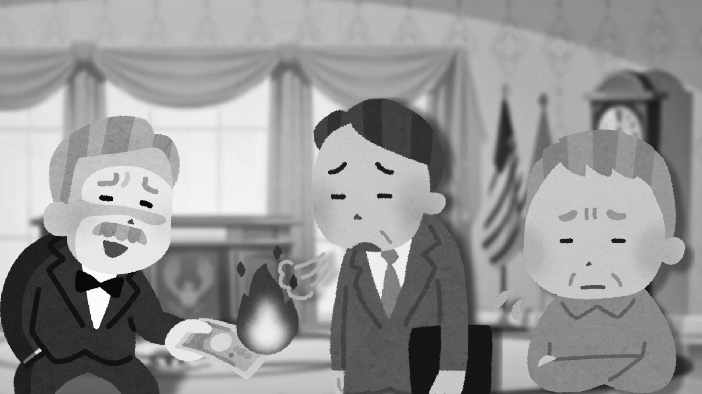

Situação 4:

Em uma empresa, o departamento de Recursos Humanos segue uma abordagem tradicional na gestão de pessoas, focando apenas na remuneração como principal forma de motivação, sem oferecer espaço para o desenvolvimento pessoal ou a melhoria das condições de trabalho. Você conversou com diversos trabalhadores, muitos dizendo que infelizmente, se essa visão for alterada, e seus salários diminuidos, os trabalhadores não conseguirão mais viver em boas condições. O que fazer?
ㅤㅤㅤㅤ